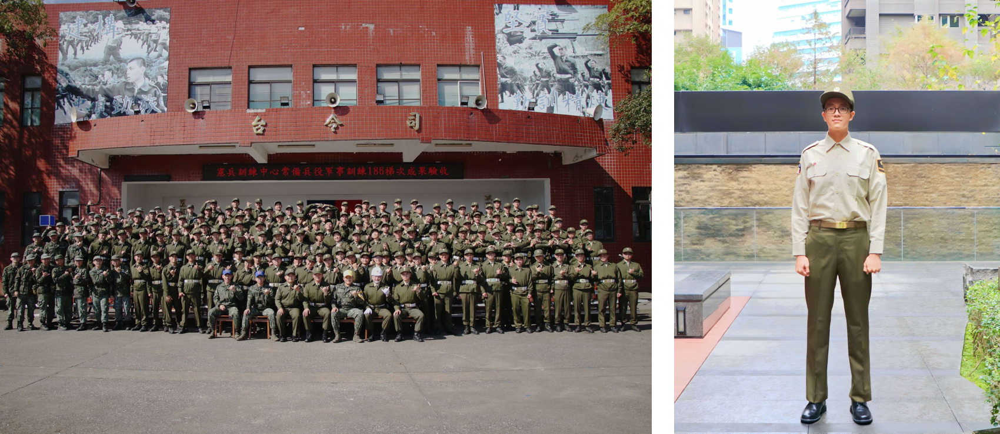
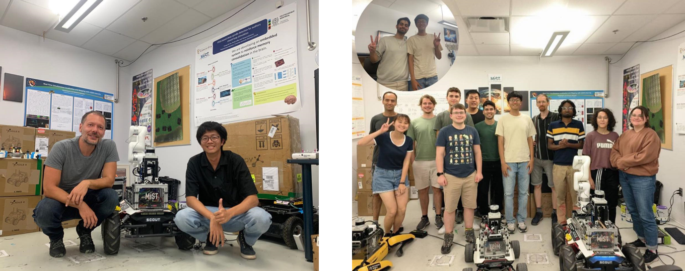
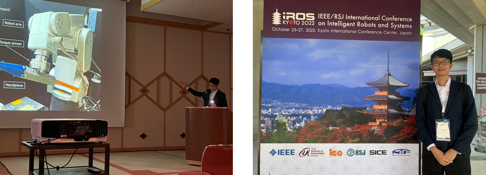

Giving a Lab Tour for EE Summer Camp Students
2024/08/04

Mandatory Military Service at the Military Police Training Center
2023/10~2024/02

6 Months Intership in MIST lab, Polytechnique Montreal
2023/02~2023/08
Thanks to Prof. Beltrame and other lab members!

I completed my master oral defense!!
2023/01/12
Thanks to Prof. Feng-Li Lian, Prof. Pei-Chun Lin, Prof.Ping-Lang Yen, Prof. Yi-Chin Ho and my advisor Prof.Cheng-Wei Chen

I participated in IROS 2022, Kyoto Japan.
2023/01/12
I freaked out giving a talk to professional researchers in english...
